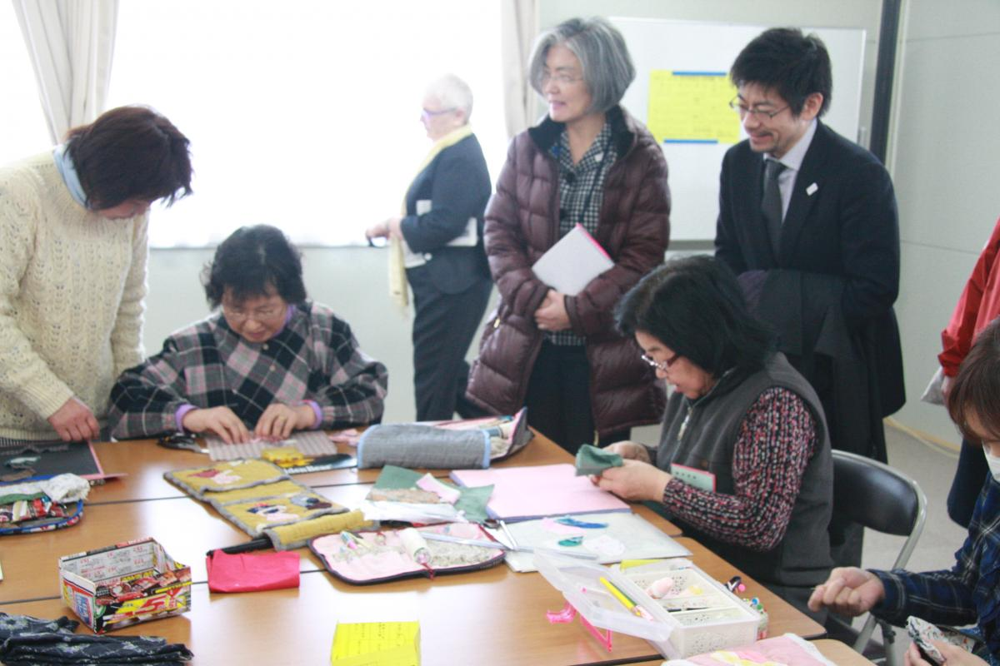

だれも置き去りにしない － 東日本大震災から5周年を迎えて
あの東日本大震災から5年の月日が流れました。本日あらためて、犠牲となられた方々のご冥福をお祈りするとともに、これまで被災地を訪問させて頂いた際にお会いする機会のあったお一人お一人のことを思い起こしています。
ちょうど昨年の3月、仙台で開催された国連防災世界会議に合わせて、私はOCHAのナンバー2、康京和（カン・キョンファ）国連事務次長補とともに福島県相馬市の被災地を訪問する機会に恵まれました。相馬市では慰霊碑に献花させて頂き、仮設住宅や災害公営住宅も訪問させて頂きました。また立谷市長からは、過酷な状況下で一人でも多くのいのちを守るために懸命に対応されたお話を伺うことが出来ました。
「国際社会は福島を忘れてはいない、そして国連は被災した日本の家族に寄り添い続けている」康・事務次長補が相馬市で行ったスピーチの中にそんな一節がありました。そして「私たちは、助けを必要としている人たちに手を差しのべるという普遍の人間性を護持し、被災者を含めたすべての人々の尊厳と権利の平等という共通の理想に専心しなくてはなりません。」とも述べています。震災から5年を迎えた今日もなお、被災地や避難先で暮らす方々を思い、あらためてこの言葉を胸に刻んでいます。
国連防災世界会議の最中、サイクロン被害が太平洋の島国ヴァヌアツを襲いました。そして翌月にはネパールを大地震が襲います。いずれも国際支援が求められる大きな災害であったため、OCHAは国連災害評価調整チーム（UNDAC）をそれぞれの被災地に速やかに派遣。各国政府や国連機関、赤十字組織、NGO等による国際緊急援助活動の調整を担いました。加えて先月には、台湾が地震に見舞われ、またフィジーではサイクロン被害が発生したことも、皆さんのご記憶に新しいことかと思います。
こうした災害が相次ぐ中、私たち神戸事務所も、OCHAアジア太平洋地域ネットワークの一員として備えの強化に貢献しています。例えば昨年は、アセアン（ASEAN）地域フォーラムの災害救援実働演習や国際捜索救助諮問グループ（INSARAG）のアジア太平洋地域模擬演習等をサポートしました。 また災害救援の際に民軍調整を円滑に行うべく、日本とラオス政府が共同議長を務める「拡大アセアン国防相会議の専門家作業グループ（ADMM+EWG on HADR）」等、平時からの取り組みにも積極的に関与しています。 これらはまさに、国連防災世界会議で採択された仙台防災枠組みの優先行動の一つでもある「効果的な災害対応への備え向上」に直接的に貢献するものです。
一方、中東やアフリカを中心に紛争もさらに深刻化し、6,000万人という難民・国内避難民が発生。世界は今や第二次世界大戦後最悪と呼ばれる人道危機に直面しています。気候変動の影響、都市化、人口増、テロや治安の悪化等もあいまって、実に日本の総人口に匹敵する1億2,500万人以上が、国際社会からの人道支援を必要としている凄まじい状況です。
私たちもこうした状況を一人でも多くの日本の皆さんに知って頂こうと努めています。特に、東日本大震災と同じく紛争開始から５年が経過したシリア人道危機については、国連難民高等弁務官事務所(UNHCR)やジャパン・プラットフォーム、あるいは日本赤十字社や日本放送協会（NHK）と連携して、公開シンポジウム等に参加しています。さらに地元神戸では、昨年8月19日に「世界人道デー」イベントを開催。初めて神戸ポートタワー等のランドマークが「国連ブルー」に染まり、より多くの方々に世界が直面する人道課題を知って頂くきっかけとなりました。
そして今年5月、G7伊勢志摩サミットの直前には、史上初となる「世界人道サミット」がトルコのイスタンブールで開催されます。この会議のために準備された報告書の中で、潘 基文（パン・ギムン）国連事務総長は、「人道への課題」と称して「５つの責任」を国際社会がしっかりと共有していくことの必要性を訴えています。それは①紛争の予防と解決のための政治的リーダーシップ、②人道規範の遵守、③「だれも置き去りにしない」こと④「援助を届ける」から「ニーズ自体をなくす」こと、そして⑤人道への投資です。
このうち、「だれも置き去りにしない（Leave no one behind）」は、2030年までの達成を目指し国際社会全体として合意した「持続的な開発目標（Sustainable Development Goals: SDGs）」でも謳われています。本当に「だれも置き去りにしない」ためには、自然災害の被災者、難民や国内避難民、女性・若者・子供たち、高齢者や障がいを持つ人々、移民その他のマイノリティーグループに属する人々の生命を守り、生き抜いていく力をしっかりと応援することが不可欠です。「だれも置き去りにしない。」この言葉はそのまま、東北被災地の、また福島第一原発事故の影響を受けているあらゆる人々に対しても当てはまる、あるいは当てはめるべき指針と言えるのではないでしょうか。
世界人道サミットに向けて、潘 基文事務総長は世界中の人々にこう訴えかけています。
私は、人々の尊厳・安全・健康な暮らし、即ち人道という考え方が、私たちに共通する運動となるよう、市民一人ひとりに呼びかけます。皆さんのリーダー達に対して、人々が享受すべきそうした人道性が貫かれ、護持されるような決定をするよう迫ってくだい。リーダーたちが大胆かつ勇敢な決定が出来るよう。あるいは紛争や災害を防ぎ終わらせるための責任を引き受ける際そのリスクが取れるよう。そして世界中の支援ニーズ、脆弱性、リスクを減らせるよう、リーダー達の努力をサポートして下さい。すべての人々にとってより良い未来を実現するため、皆さんが関心と共感を持って、自らの声や意見を寄せ、実際に関与し、その才能やリソースを活用することが、必要不可欠なのです。」外国人排斥、ナショナリズム、社会的排除や偏狭なものの見方が、私たちが生きるこの時代の代名詞となってはいけません。私たちには世界の現状とあるべき姿のギャップを埋めることが出来ます。そうするために必要な知識、つながり、手段と資源を持っているからです。そうした世界を実現することは、私たちの手の中にあります。そして行動を起こすために今以上によいタイミングはありません。
「だれも置き去りにしない。」それは海外での人道支援をより積極的に行うということにとどまらず、多様性を尊重し最も弱い立場に置かれた人々を大切にする社会づくりを、日本も含めて進めていかなければならないというメッセージだと感じています。そのためにもっと出来ることは何か、世界人道サミットの行方を見守りながら、皆さんと一緒に考えていきたいと思っています。
2016年3月11日
国連人道問題調整事務所（OCHA）神戸事務所長
渡部 正樹